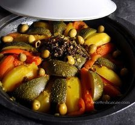
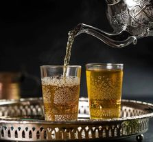
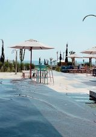
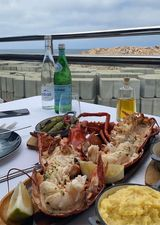
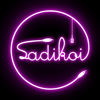

Salut, moi c’est Zineb, et je viens tout juste d’avoir 21 ans. Je viens tout droit du Maroc. Pour être plus précise, Casablanca, la ville blanche 🌴
Ce CV est fait pour que tu puisses me connaitre davantage. J’ai 3 passions dans la vie, la cuisine les voyages et la musique .
D’ailleurs, je fais actuellement partie d’une association, qui a pour but de promouvoir la culture urbaine sur les réseaux sociaux. Je te laisse cliquer juste en bas pour découvrir notre page Instagram 💜
S A D I K O I 🎤Depuis mon plus jeune âge, j’ai toujours été le genre de personne à vouloir aider ses parents durant les tâches ménagères, notamment en cuisine 👨🍳
Cette passion s’est plus accentuée depuis mon arrivée en France. Cela fait bientôt 3 ans et demi que je vis loin de ma famille, je me dois donc de prendre soin de moi et de cuisiner des bons petits plats qui me feront voyager de Marseille à Casablanca.
Ma plus grande spécialité, reste l’incontournable Tajine aux légumes, ce plat représente beaucoup de choses chez nous, notamment la convivialité et le partage, accompagné du fameux thé à la menthe. Un vrai délice 😋
 Au-delà du fait, que j’ai eu la chance de visiter plusieurs pays étrangers 🗺️, qui m’ont permis de découvrir le monde et élargir davantage mon ouverture d’esprit. J’ai aussi la chance, de naître dans un pays comme le Maroc, où la beauté et la diversité nous donnent l’impression d’être continuellement dans une carte postale 🏝️ Sans compter la température qui est idyllique, les gens fort sympathiques et la mer tout aussi bleue que le ciel. Tous les éléments sont réunis pour faire vivre un séjour rempli de magie à n’importe quelle personne 🌊
Mon meilleur voyage au Maroc reste de loin Taghazout, une ville à 40 min d’Agadir. Cette ville est à jamais une bouffée d’oxygéné frais grâce aux spots bohèmes chic mixant surf, yoga et détente 💙
Ce joli village de pêcheurs a tout pour lui. Entre faire du Jet Ski ou une randonnée en buggy entre océans et montages. Le plein d’oxygène est garanti (je vous le promets 😉)
 La musique occupe une grande place dans ma vie, elle regroupe tout ce qui a de plus beau à connaître, à vivre, à découvrir, ressentir à écouter. J’ai la chance de grandir dans une famille où la musique a été omniprésente. J’ai longtemps pratiqué du Piano, ce qui a développé mes capacités d’écoute, mon attention et mon regard sur le monde 🎹
Je fais partie actuellement d’une association nommée « SADIKOI », qui permet de promouvoir la culture urbaine « rap ». Sadikoi m’apporte beaucoup dans ma vie, en étant responsable communication, j’ai su combiner ma passion pour la musique et le digital.
